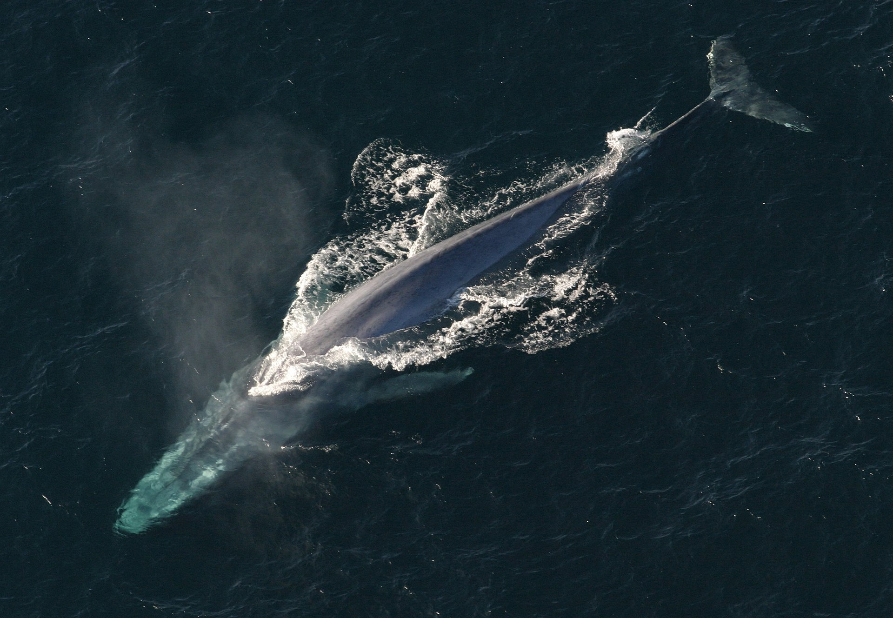
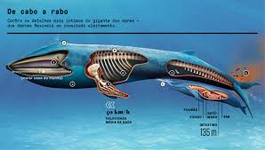
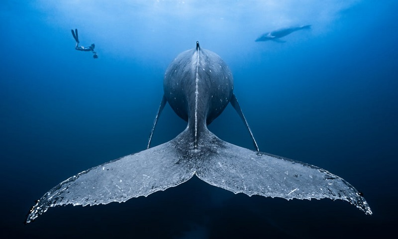

BALEIA AZUL

A baleia-azul (nome científico: Balaenoptera musculus) é um mamífero marinho pertencente à subordem dos misticetos (Mysticeti) dos cetáceos. Com até 30 metros de comprimento e mais de 180 t de peso, eram considerados os maiores animais que já existiram. No entanto, a descoberta de Perucetus colossus e inferência do seu peso (entre 85 e 340 toneladas), levaram a que se reconsiderasse esse recorde.

Longo e esguio, o corpo das baleias-azuis apresenta seu dorso em diferentes tons azuis-acinzentados, enquanto seu ventre é geralmente mais claro. Existem pelo menos três subespécies distintas: B. m. musculus, cujo habitat restringe-se ao norte dos oceanos Atlântico e Pacífico, B. m. intermedia, do oceano Antártico e B. m. brevicauda (também conhecida como baleia-azul-pigmeia), encontrada no oceano Índico e no sul do oceano Pacífico. B. m. indica, do oceano Índico, pode ser uma outra subespécie. Como é o caso das outras espécies pertencentes à subordem dos misticetos, a dieta das baleias-azuis consiste quase que exclusivamente de pequenos crustáceos conhecidos como krill, os quais filtram da água do mar usando lâminas córneas em sua cavidade bucal. Porém, elas também podem se alimentar de pequenos peixes e lulas.
As baleias-azuis eram, até ao início do século XX abundantes em quase todos os oceanos. Caçadas durante mais de um século, foram levadas à beira da extinção pelos baleeiros, até se tornarem objeto de mecanismos de proteção adotados pela comunidade internacional em 1996. Um relatório de 2002 estimou que existam de cinco a doze mil baleias-azuis ao redor do mundo, distribuídas em pelo menos cinco agrupamentos. Contudo, pesquisas mais recentes sobre as subespécies pigmeias sugerem que a população atual é maior.Antes de serem caçadas, o maior agrupamento estava na Antártida, com aproximadamente 239 000 indivíduos. Os agrupamentos remanescentes atuais, muito menores, com algo em torno de 2000 indivíduos cada, estão localizados a noroeste dos oceanos Pacífico, Antártico e Índico. Outros dois agrupamentos de baleias-azuis encontram-se ao norte do oceano Atlântico, e há pelos menos outros dois no Hemisfério Sul.
A nadadeira dorsal das baleias-azuis é pequena, visível apenas por um curto período de tempo, enquanto mergulham. Através de seu espiráculo, elas podem produzir jatos de água de até 9 metros de altura. O volume de seus pulmões pode chegar a 5 000 ℓ. Elas também são os animais mais ruidosos do mundo, podendo emitir sons que atingem os 188 dB — mais fortes que o som de um avião a jato — e que podem ser ouvidos a mais de 800 quilômetros de distância.
s